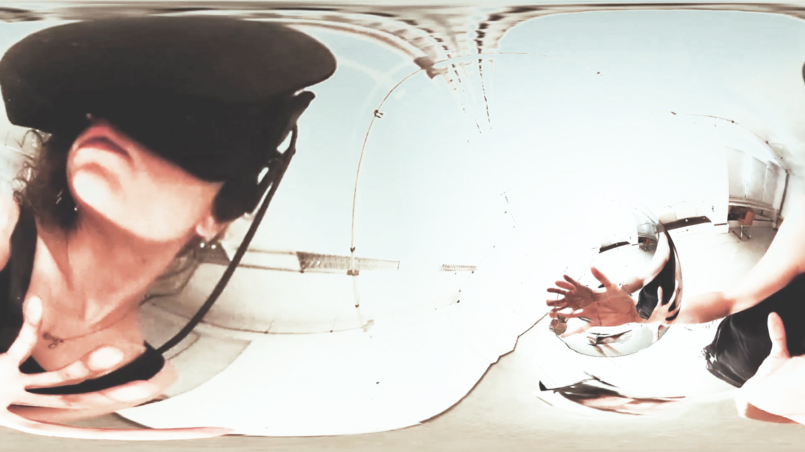
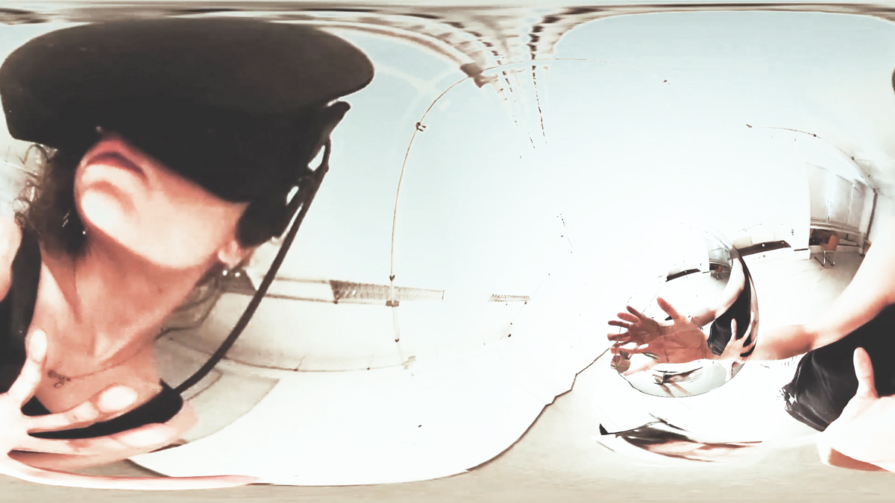

Real Mirror is an interactive object that enables users to experiment with new modes of perceiving the body and space. The spatial installation is based on a VR system accessed with a VR headset (Oculus Rift). The interface between body and virtual space is a spherical navigation instrument, which provides a virtual 360° view of the surroundings and reacts to movement impulses of the users. They can navigate freely in the virtual spaces that emerge and must constantly reorient themselves in the complex interplay between physical movement and spatial transformation.
…